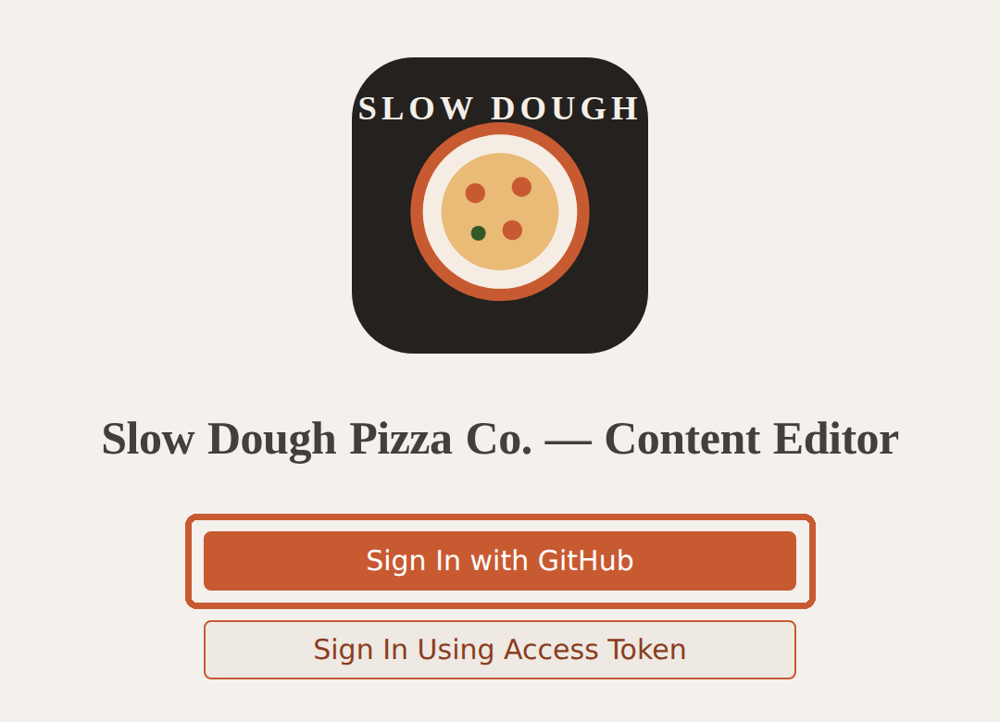
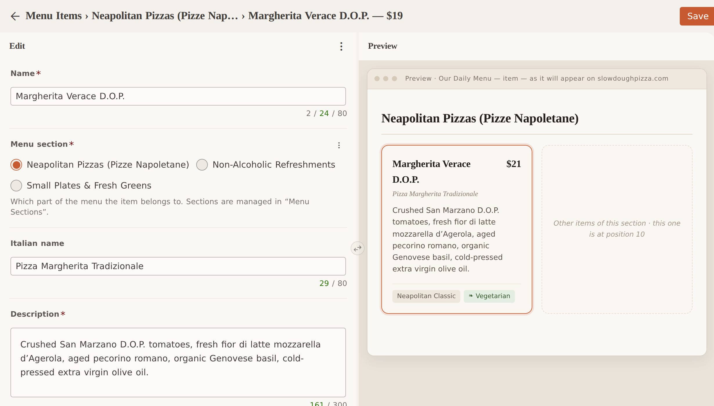
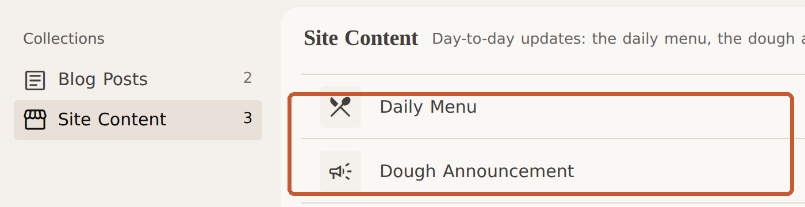
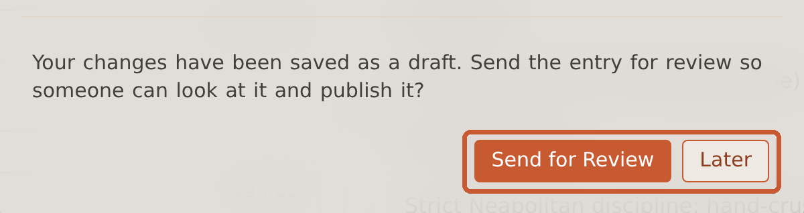
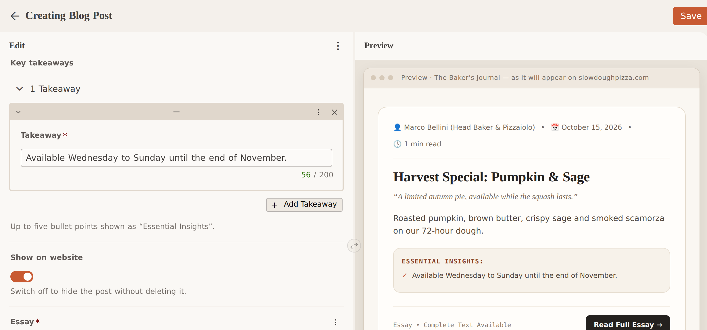
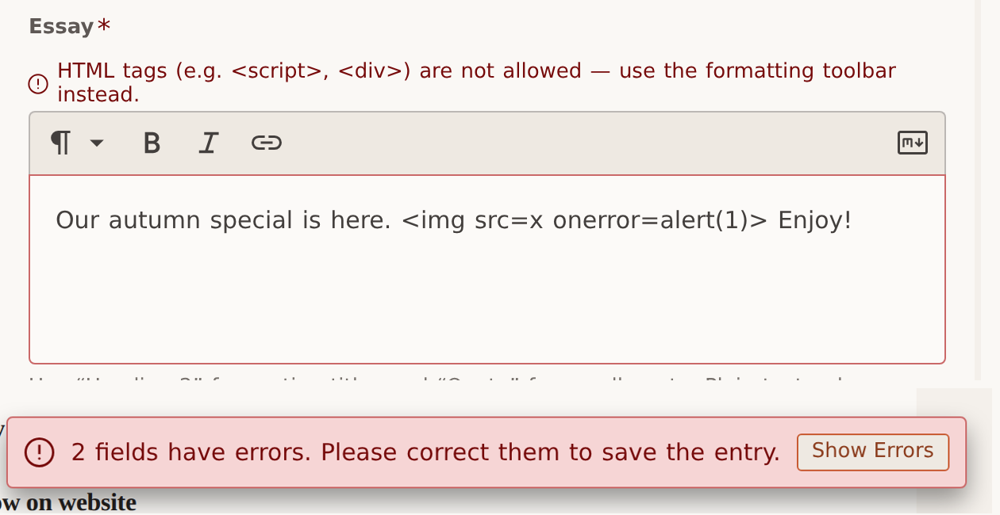

smagara.github.io/SlowDoughPizzaSite_Sveltia/adminThe editor is not linked from the website (so visitors and search engines never see it). Type the address below once and bookmark it:
https://smagara.github.io/SlowDoughPizzaSite_Sveltia/admin
Click Sign In with GitHub and approve the request in the GitHub window. (If the site owner gave you an access token instead, use “Sign In Using Access Token” and paste it once — your browser remembers it, and next time the editor opens straight away.)

Change the text, price or badges (green counters show the room left); pick the Menu section; set Position in section (lowest number first — 10, 20, 30 leaves room to slot a dish in). Switch Show on menu off for a sold-out dish instead of deleting it. New adds a dish (a brand-new section must be live first). The Preview on the right shows the item as it will look on the website.

The editor opens on Menu Items, grouped by section — click a dish to change it. Menu Sections holds the headings, Blog Posts the essays, Site Content the intro, banner and hours.

Click Save (top right). The editor confirms that your change was saved as a draft and asks whether to send it for review — click Send for Review.

The item now shows In Review. Choose Later only if you want to keep editing before anyone looks at it; the change then waits as a Draft — saved and safe, but nobody is asked to review it — until you send it.
The manager opens the card on the Editorial Workflow board (branch icon, top of the editor), checks the preview and moves it to Ready. That is the approval: the site rebuilds and the change is live a few minutes later — no GitHub needed.
Drafts = saved, private · In Review = waiting for the manager · Ready = publishes automatically (manager only). Cards disappear once live; ↶ on a card takes it back.
Open Blog Posts → New. Fill in the Title, a one-line Subtitle, Author, the Publish date (posts are listed newest first), choose an Illustration and write a short Excerpt for the card. Add up to five Key takeaways — they appear as “Essential Insights”.
Write the Essay in the large box. Use the toolbar (or type at the start of a line): Heading 2 (## ) for section titles, Quote (> ) for a pull-quote, Bold/Italic, bullet lists and links. Plain text only — the site applies the fonts and colours.
Show on website hides a post without deleting it (e.g. a seasonal post). Editing an existing post works the same way: open it from the list, change, Save, Send for Review.

The form checks your text when you click Save. If something is wrong, the field is outlined in red with a message and a banner says how many fields need attention — the change is not saved until they are fixed.

| What you see | What to do |
|---|---|
| My change is not on the website yet. | If its card is still In Review, the manager has not moved it to Ready. After that allow 2–3 minutes and refresh (Ctrl/⌘ + Shift + R). A card stuck in Ready means a check failed — ask the developer. |
| The editor opens but shows nothing to edit (empty lists or blank fields). | Don’t re-type everything — tell the site developer. The editor is reading a branch of the website project that has no content on it (a set-up issue, not your mistake). |
| “You don’t have access to the repository.” | Your GitHub account is not a collaborator on the website repository. Ask the site owner to add you (Settings → Collaborators) and sign in again. |
| “N fields have errors.” | Click Show Errors, fix the outlined fields (see the rules above) and Save again. |
| Old text shown, or “the branch has moved”. | Reload the editor — it fetches the latest content. If someone else changed the same item, re-open it and redo your edit. |
| I want to change or undo something. | Still on the board: open the item, edit and Save (same request), or discard it with ↶ on its card. Already live: make the opposite change and send it through again. |